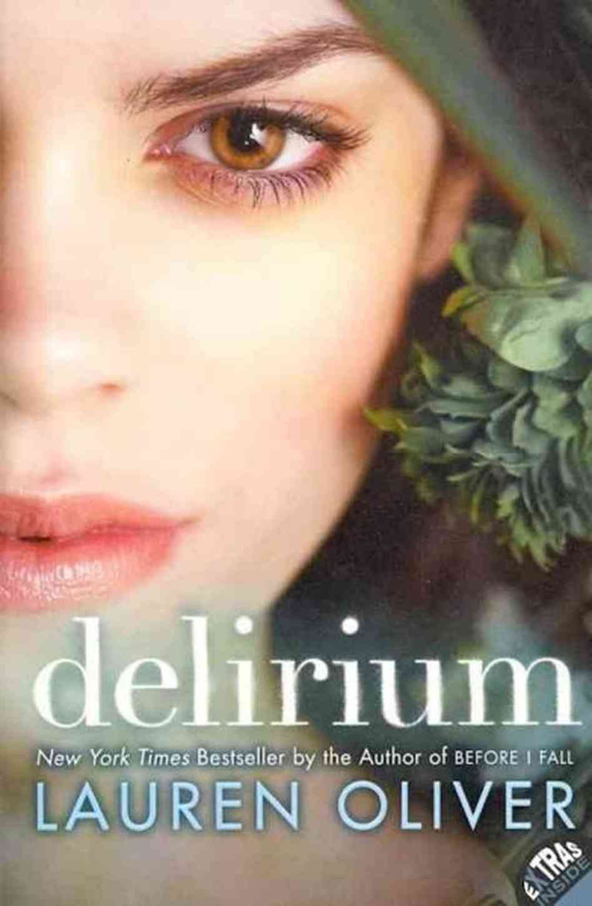
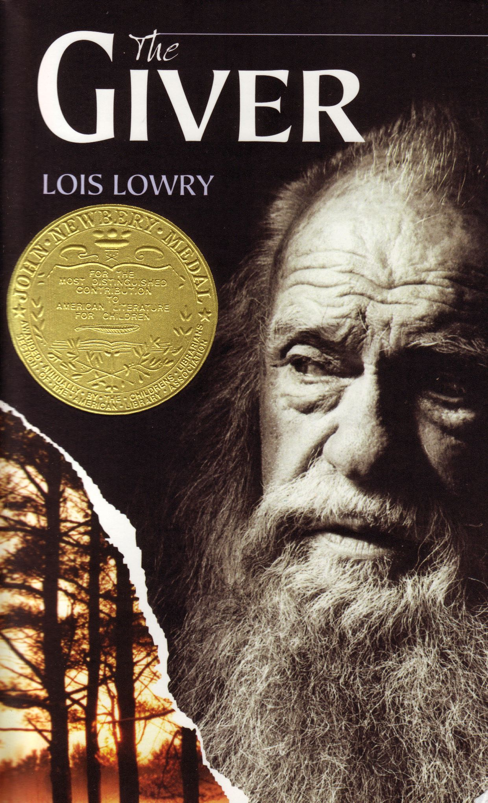
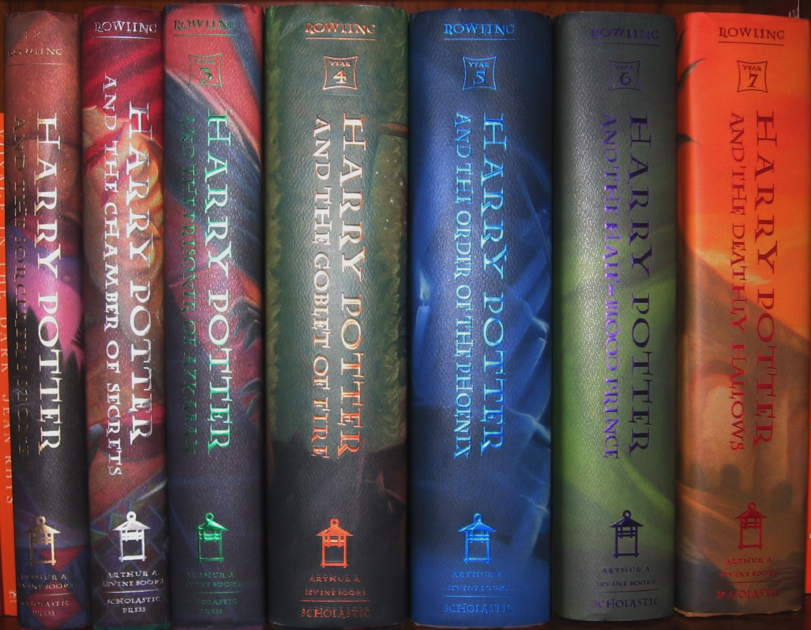
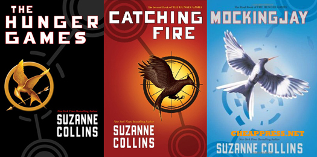

I like a lot of books...
|  |  |  |  |
The most recent book series I have read is Delirium. I'm in the middle of it and I cannot stop reading, it's amazing. I finished reading The Giver about a month ago and it was quite emotional. It was absolutely amazing and if you haven't read it then I strongly incourage you to do so. The Harry Potter series I started when I was about 7 and read it on and off until 2010, when I finished the series. It was by far the best book series I have ever read and words cannot even begin to explain how amazing that series is. The hunger games series I finished right around when Catching Fire came out and it was good, but the ending of the series was terrible and you've probably all have heard that, but it's true.